AI filmmaker for vertical micro-drama and short drama. I take an episode from script to delivery: story breakdown, character and set references, AI image and video generation, shot-by-shot quality control, editing, sound and subtitles.
Same faces, costumes and props across 19 chained clips in a 3-minute vertical scene.
Faces, hands, props, blocking, dialogue against script, voice pitch. Every issue logged with timecode and a fix.
Short drama series, Mandarin-dialogue films, product ads, and my own YouTube channel.
A vertical fantasy-romance micro-drama with Mandarin dialogue. The goal was to beat a competitor's version of the same scene. A modern heir finds that an antique Tang-dynasty mirror holds a spirit who takes human form, changing costume mid-scene. Over three minutes, I rebuilt the scene in three rounds, changing the consistency method each time until faces, costumes and props held steady across all 19 clips.
A sample from my QC log for this scene. Every clip passes this list before the next clip is chained from it.
| Check | How | Example catch |
|---|---|---|
| Face drift | Face crops compared against the reference sheet at start, middle and end of every cut | Male lead looked older and wider while seated (clip G, 5.3–6 s). Regenerated. |
| Voice | Pitch measured per clip. The male lead sits at 92–123 Hz. | Two clips came out at 174–195 Hz. Regenerated with a deeper-voice prompt. |
| Dialogue | Whisper transcript compared line by line with the script | All 11 reviewed clips matched the script. |
| Props and costume | Mirror shape, hairpin and forehead mark tracked across cuts | Mirror changed from a small round lotus mirror to a large fan shape. New chain started. |
| Set and blocking | Room, lighting and left/right position checked against the set references | A bathroom appeared behind the door instead of the suite. Clip rebuilt. |
| On-screen text | OCR on 298 frames | No stray captions or watermarks. |
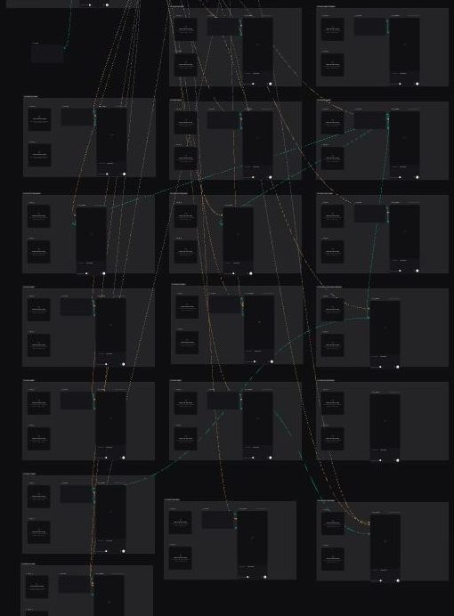
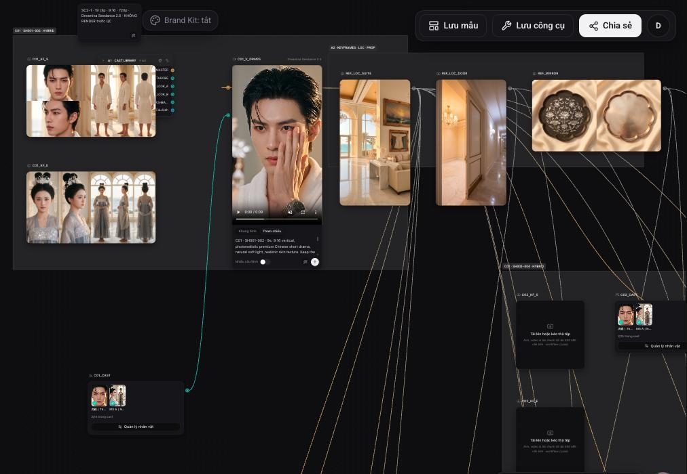
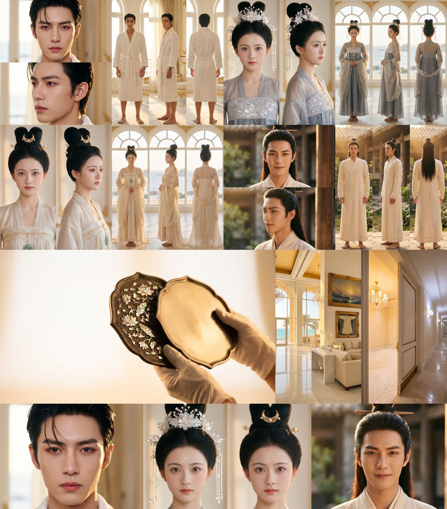
In 2026, Lu Mingchuan is broke and cannot pay for his mother's surgery. He asks an AI assistant which day he should relive, and wakes up on 29 October 2021. Episode 1 runs from the shock of rebirth to his first business chance and his first rival.
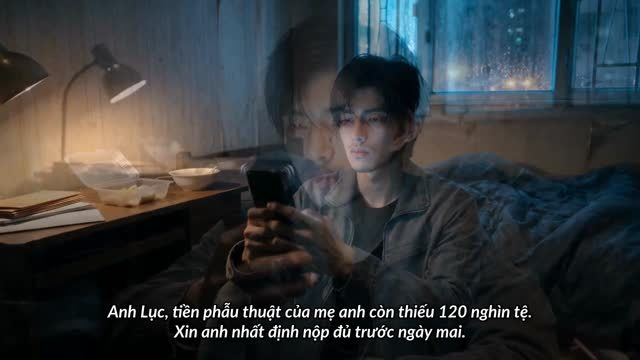
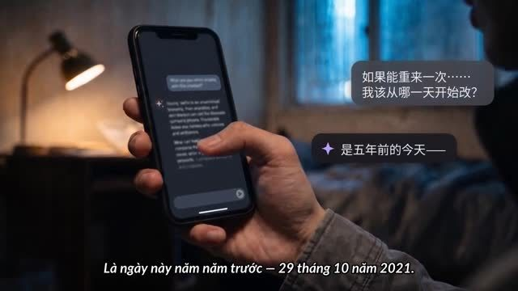
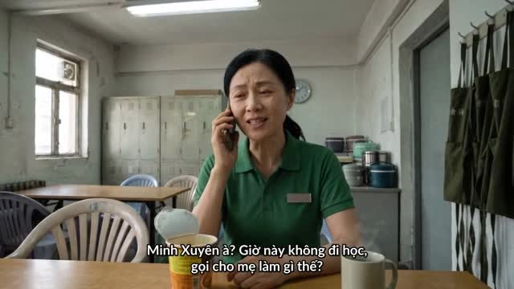
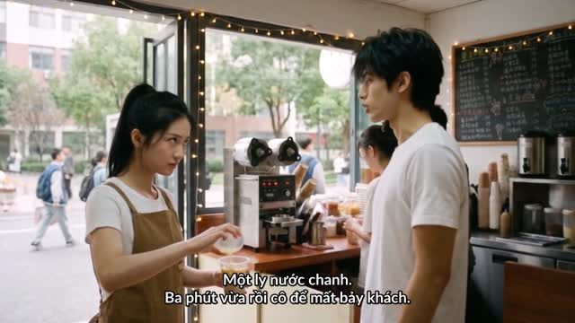
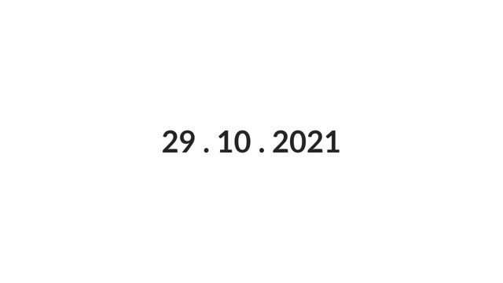
Segments of 8–12 seconds with action and dialogue written out.
Faces, costumes, sets and an opening frame for each segment.
Video with voice, driven by the references and the shot description.
Faces, hands, props and dialogue checked. Serious errors regenerated.
Assembly, transitions, time cards, sound, subtitles.
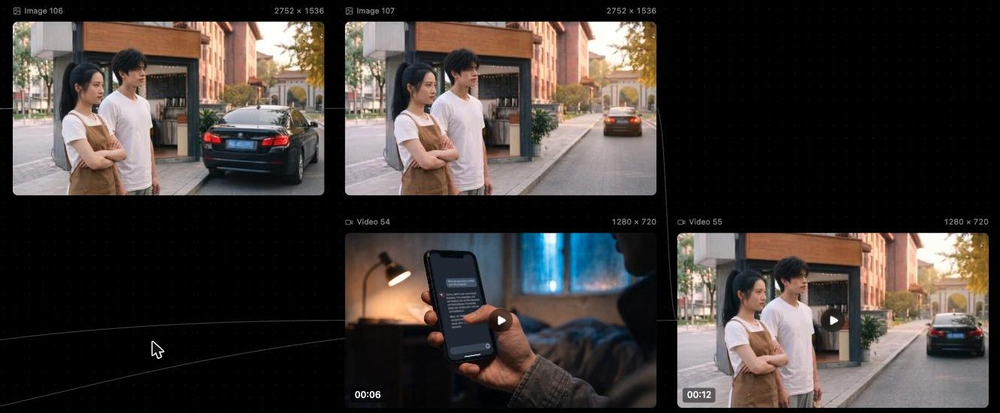
A 30-episode vertical short drama, 1–2 minutes per episode: medieval European nobility, revenge, intrigue, a strong female lead. I produced episodes from the provided scripts, following the character design sheet for every role.
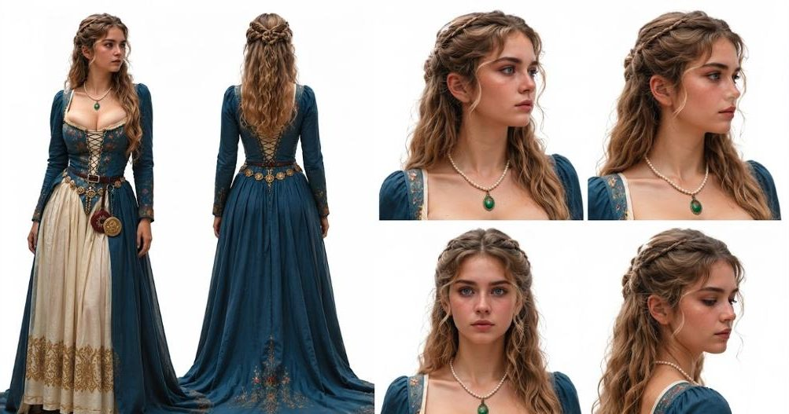
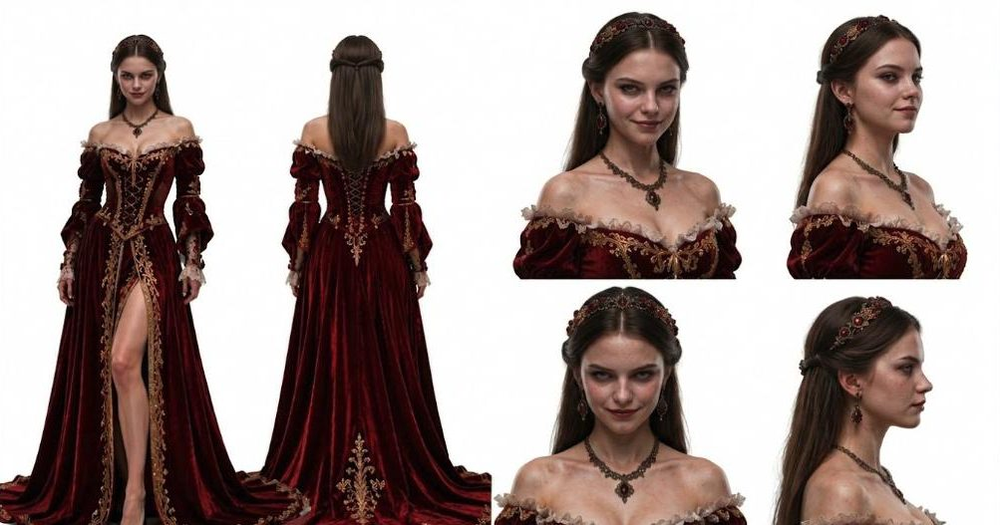
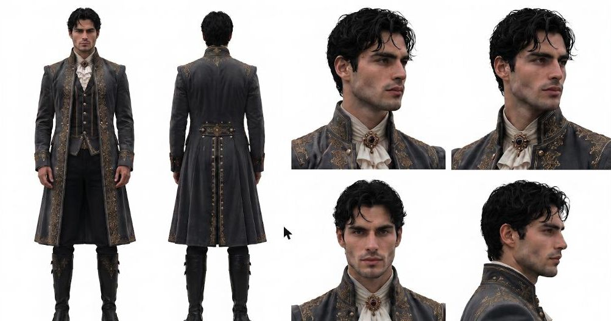
Logline. Mingchuan has three days to save Zhixia's milk tea shop. On the first morning, Han Kaifeng opens a rival shop across the street with a buy-one-get-one deal. Mingchuan wins the round, only to learn the rival has moved on to his family.
Close: a red flyer slides under the door. “Fengwei Milk Tea · Opening across the street · Buy 1 get 1 free.” Zhixia picks it up and looks across the road, where workers are hanging a new sign.
Mingchuan opens the AI app. Chat bubbles appear beside the phone.
Mingchuan looks at the wall clock. Close on the hands at 9:30. He smiles.
Evening study ends and students pour out. Zihao hands out cards: “Wait more than 3 minutes, your second cup is free.” Pre-orders flood the dorm group chat.
The cup sealer jams. The hourglass on the counter runs out. Zhixia pushes three free cups across to customers.
AI screen: “Night two revenue: ¥1,120 · Free cups: ¥340.” Zhixia looks at the numbers, says nothing, and shakes the shaker harder.
Wide: Fengwei is crowded but slow. The line at Lin's moves steadily. Staff across the street stare over. Zhixia counts receipts and looks up.
She sets an envelope on the counter and slides it toward him.
Zhixia almost laughs and turns away fast.
A black sedan stops beside Mingchuan. The window lowers: Han Kaifeng.
He hands over a business card: “Sheng'an Supermarket · Han Group.” Mingchuan freezes. It's the supermarket where his mother works.
His phone buzzes. His younger sister.
The AI screen lights up on its own: “Warning: this event is 3 months earlier than the old data.” Close on Mingchuan. The sedan's tail lights fade. Cut to black.
The rival's flyer is in the first frame. The viewer knows the deadline, the rival and the stakes at once.
Lost time, a risky plan, lost money, then a win. At the moment of victory the rival goes after the hero's weakest point.
The business plot and the family plot meet at the end. The AI warns but cannot save anyone, per the series rules.
Production: 3 locations, about 12 shots, reusing every character and set from Episode 1.
See Moonlight Treasure above.
A 2:12 pilot, 22 shots, business thriller. Production script with Mandarin dialogue, pinyin and translation. Two lead characters and 22 shot cards set up on the canvas.
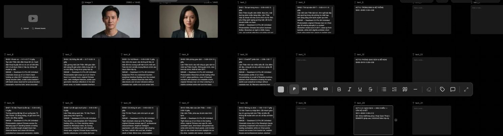
Ideas, scripts, editing and publishing, all done myself. Film content contributor for 98S Media (Thực Sự Xem Phim).